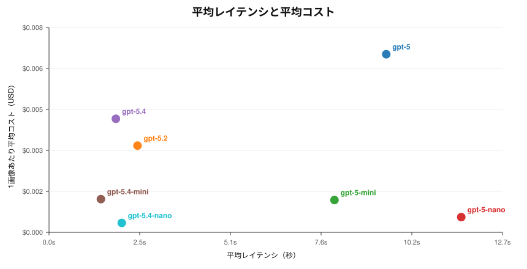
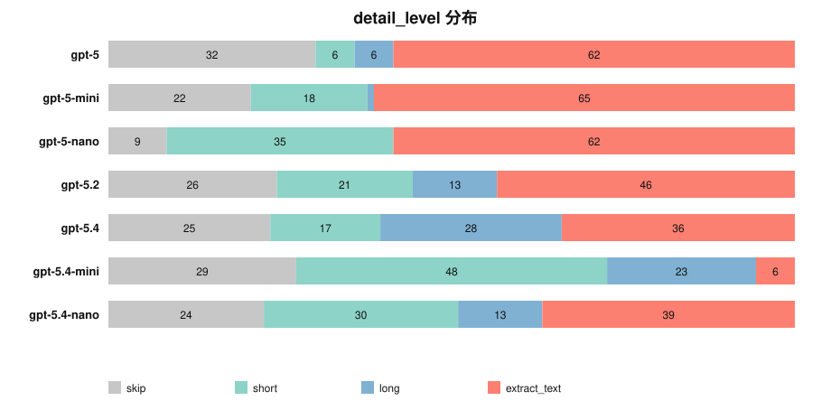
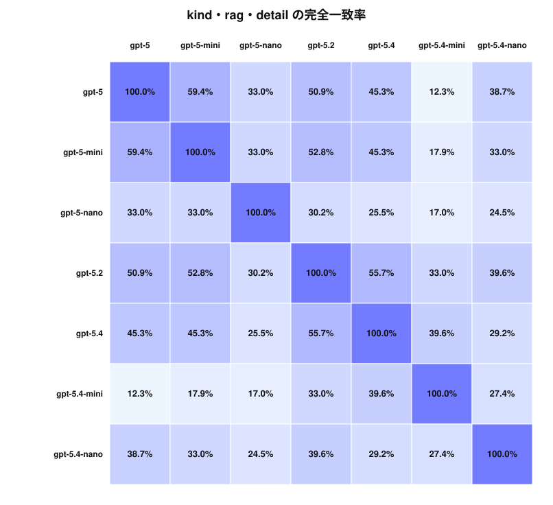

元データ: `image_eval_results.jsonl`
gpt-5.4-mini で、平均レイテンシは 1.46 秒でした。gpt-5.4-nano で、1画像あたり平均コストは $0.0004 でした。gpt-5 と gpt-5-mini で、kind + rag_value + detail_level の完全一致率は 59.4% でした。gpt-5 と gpt-5.4-mini で、完全一致率は 12.3% でした。kind はモデル間で比較的安定していますが、detail_level はかなり揺れます。今回のペア一致率では、kind はおおむね 81.1%〜95.3%、detail_level は 30.2%〜75.5% でした。usage フィールドから推定しています。課金比較としては、これを基準にするのが実務上もっとも自然です。
| モデル | 平均レイテンシ | 中央レイテンシ | 1画像あたり平均コスト | このセット合計コスト |
|---|---|---|---|---|
gpt-5 | 9.47s | 9.18s | $0.0068 | $0.724 |
gpt-5-mini | 8.01s | 7.88s | $0.0012 | $0.131 |
gpt-5-nano | 11.57s | 11.05s | $0.0006 | $0.062 |
gpt-5.2 | 2.48s | 2.23s | $0.0033 | $0.353 |
gpt-5.4 | 1.88s | 1.67s | $0.0044 | $0.462 |
gpt-5.4-mini | 1.46s | 1.26s | $0.0013 | $0.135 |
gpt-5.4-nano | 2.04s | 1.68s | $0.0004 | $0.038 |
補足:
gpt-5 系の価格設定は公式価格表に合わせて再確認済みです。したがって、コスト差の主因は pricing の設定ミスではなく、実際の token usage の違いです。usage を信じてよい設計になっています。
| モデル | skip | short | long | extract_text |
|---|---|---|---|---|
gpt-5 | 32 | 6 | 6 | 62 |
gpt-5-mini | 22 | 18 | 1 | 65 |
gpt-5-nano | 9 | 35 | 0 | 62 |
gpt-5.2 | 26 | 21 | 13 | 46 |
gpt-5.4 | 25 | 17 | 28 | 36 |
gpt-5.4-mini | 29 | 48 | 23 | 6 |
gpt-5.4-nano | 24 | 30 | 13 | 39 |
解釈:
extract_text を最も多く選んだのは gpt-5-mini` です。long を最も多く選んだのは `gpt-5.4` です。後段でより丁寧な enrichment をしたいなら注目候補です。skip を最も多く選んだのは `gpt-5` で、より保守的なふるまいをしていると言えます。
| ペア | kind 一致率 | rag 一致率 | detail 一致率 | 3項目完全一致率 |
|---|---|---|---|---|
gpt-5 vs gpt-5-mini | 94.3% | 72.6% | 75.5% | 59.4% |
gpt-5 vs gpt-5-nano | 83.0% | 54.7% | 51.9% | 33.0% |
gpt-5 vs gpt-5.2 | 91.5% | 72.6% | 68.9% | 50.9% |
gpt-5 vs gpt-5.4 | 93.4% | 71.7% | 66.0% | 45.3% |
gpt-5 vs gpt-5.4-mini | 93.4% | 65.1% | 36.8% | 12.3% |
gpt-5 vs gpt-5.4-nano | 84.9% | 70.8% | 57.5% | 38.7% |
gpt-5-mini vs gpt-5-nano | 82.1% | 59.4% | 57.5% | 33.0% |
gpt-5-mini vs gpt-5.2 | 92.5% | 78.3% | 63.2% | 52.8% |
gpt-5-mini vs gpt-5.4 | 91.5% | 78.3% | 54.7% | 45.3% |
gpt-5-mini vs gpt-5.4-mini | 94.3% | 71.7% | 33.0% | 17.9% |
gpt-5-mini vs gpt-5.4-nano | 86.8% | 67.0% | 49.1% | 33.0% |
gpt-5-nano vs gpt-5.2 | 82.1% | 61.3% | 47.2% | 30.2% |
gpt-5-nano vs gpt-5.4 | 83.0% | 64.2% | 44.3% | 25.5% |
gpt-5-nano vs gpt-5.4-mini | 81.1% | 63.2% | 30.2% | 17.0% |
gpt-5-nano vs gpt-5.4-nano | 82.1% | 52.8% | 49.1% | 24.5% |
gpt-5.2 vs gpt-5.4 | 95.3% | 86.8% | 64.2% | 55.7% |
gpt-5.2 vs gpt-5.4-mini | 94.3% | 79.2% | 44.3% | 33.0% |
gpt-5.2 vs gpt-5.4-nano | 86.8% | 72.6% | 54.7% | 39.6% |
gpt-5.4 vs gpt-5.4-mini | 92.5% | 84.9% | 48.1% | 39.6% |
gpt-5.4 vs gpt-5.4-nano | 84.9% | 73.6% | 46.2% | 29.2% |
gpt-5.4-mini vs gpt-5.4-nano | 88.7% | 67.9% | 50.0% | 27.4% |
実務上の含意:
kind より detail_level の不一致のほうが重要です。| 画像 | 注目理由 | 各モデルの出力 |
|---|---|---|
6e40acf242d69b693d9c44a0a6f65a7e763fe143459d1bfdd0acbe521493d60d.jpg | score=16 | gpt-5: arrow_only / none / skipgpt-5-mini: arrow_only / low / skipgpt-5-nano: table_or_form / high / extract_textgpt-5.2: diagram / medium / shortgpt-5.4: arrow_only / low / skipgpt-5.4-mini: arrow_only / low / skipgpt-5.4-nano: table_or_form / high / extract_text |
fcf6def197c69632cba86a1f6016a6652a7ad3bf9590371765865c1a8bce36d7.jpg | score=14 | gpt-5: other / low / skipgpt-5-mini: logo_or_mark / high / extract_textgpt-5-nano: text_as_image / high / extract_textgpt-5.2: logo_or_mark / medium / shortgpt-5.4: other / medium / shortgpt-5.4-mini: logo_or_mark / low / skipgpt-5.4-nano: logo_or_mark / low / skip |
27d967c59825fa2ed7337de414a70602943058e8f6ca2b6cf23c080beb2d9926.jpg | score=14 | gpt-5: logo_or_mark / none / skipgpt-5-mini: decorative / none / skipgpt-5-nano: text_as_image / high / extract_textgpt-5.2: decorative / low / skipgpt-5.4: text_as_image / low / shortgpt-5.4-mini: decorative / low / skipgpt-5.4-nano: decorative / low / skip |
5e7ee121f3a0c8267faf7048b26734814e3ef3060a51bec20168f6bd47e0d4aa.jpg | score=14 | gpt-5: text_as_image / high / extract_textgpt-5-mini: text_as_image / high / extract_textgpt-5-nano: text_as_image / high / extract_textgpt-5.2: ui_or_screenshot / medium / shortgpt-5.4: text_as_image / medium / extract_textgpt-5.4-mini: decorative / low / skipgpt-5.4-nano: text_as_image / medium / extract_text |
5ed229306d91d3a34dbfd3f2882450047870904ec5f942ae3c25518265c348a4.jpg | score=13 | gpt-5: decorative / none / skipgpt-5-mini: decorative / none / skipgpt-5-nano: table_or_form / high / extract_textgpt-5.2: logo_or_mark / low / skipgpt-5.4: logo_or_mark / low / skipgpt-5.4-mini: table_or_form / high / extract_textgpt-5.4-nano: table_or_form / high / extract_text |
8d5d981863c3c4938f85a3826799cfb2cc2a85eb534becaf654344562b7fdabc.jpg | score=13 | gpt-5: other / low / skipgpt-5-mini: text_as_image / high / extract_textgpt-5-nano: text_as_image / medium / extract_textgpt-5.2: logo_or_mark / low / skipgpt-5.4: logo_or_mark / low / skipgpt-5.4-mini: logo_or_mark / low / skipgpt-5.4-nano: text_as_image / medium / extract_text |
72561ac4f39852747790b6e7a4feb85f24c15bfc24ad78422df13d16480e771d.jpg | score=13 | gpt-5: logo_or_mark / none / skipgpt-5-mini: logo_or_mark / low / skipgpt-5-nano: text_as_image / high / extract_textgpt-5.2: logo_or_mark / low / skipgpt-5.4: logo_or_mark / low / skipgpt-5.4-mini: logo_or_mark / low / skipgpt-5.4-nano: decorative / none / skip |
39854df2b18c6b9d6ad36fc1e9721d310c9a225b4dc19df684aa85aa6f05a8cd.jpg | score=12 | gpt-5: other / low / skipgpt-5-mini: other / medium / extract_textgpt-5-nano: text_as_image / low / extract_textgpt-5.2: diagram / medium / shortgpt-5.4: diagram / medium / shortgpt-5.4-mini: other / medium / shortgpt-5.4-nano: other / medium / skip |
7b911190ae8a9a56bff1407119946d31b60ced88f8c4145d9549a6b068fe034c.jpg | score=11 | gpt-5: decorative / low / skipgpt-5-mini: decorative / none / skipgpt-5-nano: text_as_image / high / extract_textgpt-5.2: text_as_image / medium / extract_textgpt-5.4: text_as_image / medium / extract_textgpt-5.4-mini: decorative / low / skipgpt-5.4-nano: text_as_image / medium / extract_text |
ff453133061a974354db176e303c7912b78ff893c54bb0ba74cde8a41343a426.jpg | score=11 | gpt-5: logo_or_mark / none / skipgpt-5-mini: decorative / low / shortgpt-5-nano: text_as_image / low / shortgpt-5.2: logo_or_mark / low / skipgpt-5.4: logo_or_mark / low / skipgpt-5.4-mini: logo_or_mark / low / skipgpt-5.4-nano: logo_or_mark / none / skip |
目立つ傾向:
gpt-5.2 にするのがよさそうです。コストと `gpt-5.4` への近さのバランスが最も良好です。gpt-5.4 は上限確認や borderline case の spot check 用に残すとよさそうです。gpt-5.4-nano は一次ふるいには魅力がありますが、単独運用するなら食い違いの大きいパターンに対する二段目フィルタを用意したいです。kind ごと、detail_level ごとに人手レビューを足して、どの軸でモデルを選ぶかを明確にする。